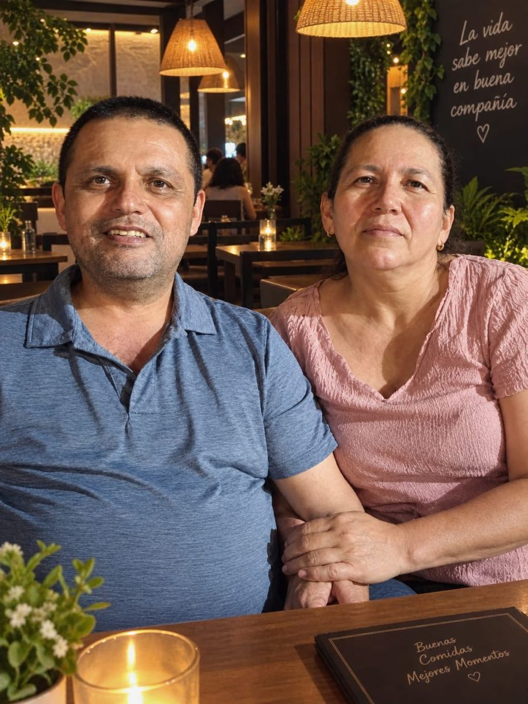

Boda Héctor & Martha
Cada fotografía guarda un recuerdo. Ayúdanos a conservar los momentos más especiales de este día.
Vista previa
Preparando fotografía…
Galería
Fotografías que los invitados ya compartieron con Héctor & Martha. Toca una para verla en grande.
Modo organizador
Las fotos que elegiste en este teléfono, aunque cierres la página. Las marcadas «Compartida» ya están en la galería de todos.
Todavía no has confirmado ninguna fotografía.
1 fotografía sin enviar